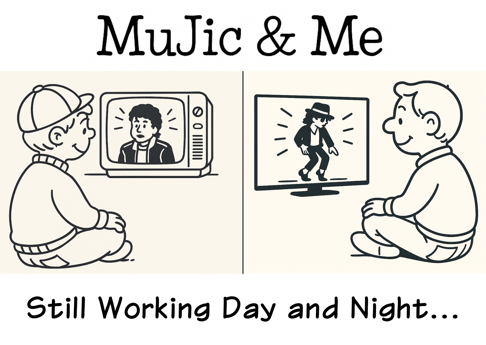

※この対談はフィクションです。Michael Jackson本人の実際の発言ではありません。
Michael：全部聴かせてもらったよ。ありがとう。まず、最初にひとつ聞いてもいいかな。どうして、このMIXを作ろうと思ったの？
Agashi：話すとちょっと長くなるよ（笑）。
Michael：大丈夫。今日はそのための時間じゃないか。
Agashi：そうだね。じゃあ話そうかな。オレがマイケルを好きになったのは、小学4年生の頃。ちょうど『BAD』の頃だった。 ムーンウォークを真似して、ミュージックビデオを何度も観て、本当に夢中だった。学校でローマ字を習った時なんて、「これでマイケルに手紙が書ける！」って本気で興奮したんだ。 でも、よく考えたら……「KO N NI CHI WA……って日本語じゃないか！」って気付いてさ（笑）。
Michael：（笑）
Agashi：あの時は本気で落ち込んだよ。それくらい憧れてた。 その後はマイケルにもいろんなことがあったよね。世間から変人扱いされたり、笑い者にされたり。正直に言うと、自分もそういう目で見てしまった時期はあった。ごめん。 それでも、音楽を聴けばやっぱり「カッコいい」という気持ちは変わらなかった。DJを始めてからは、レコ屋に行ったら必ず「M」の棚をチェックして、あなたのレコードを探しては少しずつ買い集めるようにしてたよ。
Michael：ありがとう。
Agashi：こちらこそだよ。そして2009年のあの日……。本当にショックだった。 その時、「自分にできることは何だろう」って考えた。むしろ考える前に答えは出ていた。マイケル・ジャクソンのMIXを作ること。それしかなかった。 でも、その頃はもう社会人になっていて。頭の中ではずっと構想を練っていたけど、録音するところまではいかなかった。 気が付けば10年以上経ってて。DJ活動を再開して、真っ先に思った。「あの時やり残したことを、今やろう。」 やりたいというより、やるべきことだったんだ。
Michael：だからこのタイトルなのかな。
Agashi：そう。これは単なるMichael Jackson MIXじゃない。 子どもの頃に憧れていた自分と、DJになった今の自分。その間をずっとつないできた音楽ストーリーなんだ。
Michael：まず…「Behind The Mask」を選んだのは意外だった。どうしてこの曲だったの？
Agashi：実は、作ろうと決めた当初から1曲目はこれって決めてた。
Michael：そんなに早く？
Agashi：うん。あなたがいなくなったあと、本当にたくさんのトリビュートMIXが出たよね。DJ Premier、Mr. Cee、DJ Jazzy Jeff。他にも何枚か買って聴いた。どれも素晴らしかった。 だからこそ、10年以上経ってから自分が作るなら、その頃の作品との違いが必要だった。
Michael：どんな？
Agashi：あなたがいなくなったあと世に出た曲を使うこと。あの頃にはまだ存在しなかった作品を、このMIXの入口に置くこと。それが自分なりのこのMIXの価値だった。 もちろん「Behind The Mask」そのものが持つ"始まり"の雰囲気が合っているというのもある。歓声があって、サックスが入って、「さあ始まるぞ」って空気感。 そして、あの時にはなかったこの曲から始めることで、新しいMJ MIXを作る意味があると思ったんだ。
Michael：でも実際には「Music & Me」から始まっているよね。
Agashi：そう。ある日、ふと映画『ムーンウォーカー』を思い出したんだ。あの映画のオープニング、「Music & Me」から始まって、そこからあなたの歴史をたどっていくよね。 「あ、これだ」そう思った。ロケットのSEから「Behind The Mask」につないでみたら、驚くくらい自然だった。その瞬間、このMIXの始まりが決まったんだ。
Michael：僕の映画の始まりを借りて、新しい物語を始めたんだね。
Agashi：そう。「MuJic & Me」というタイトルを活かしながら、本当のマイケルファンにだけ伝わる演出。これで自分のマイケル愛を表現したってわけ。
Michael：「Billie Jean」が少しだけ出てきた時は驚いたよ。
Agashi：実は最初は違ったんだ。「Behind The Mask」から、そのまま「Another Part Of Me」につなぐ構想だった。
Michael：でも変えた。
Agashi：うん。実際につないでみたら、何か少し違和感があってね。そこで思いついたのが「Billie Jean」のイントロだけを使う方法。 ドラムからベースラインまでの16小節だけをブリッジとして入れて、「Another Part Of Me」につなげた。
Michael：全部聴かせないんだね。
Agashi：そう（笑）。Billie Jeanを出すには、さすがに早すぎるかなって。
Michael：たしかに。Billie Jeanをそんなに早く出したら、もったいないよ（笑）。
Agashi：本人に聞くのも変な感じだけど、あそこで一瞬だけBillie Jeanが出てくるの、どう思う？
Michael：面白いと思うよ。あれだけ有名な曲だからこそ、少しだけ姿を見せることで期待と想像が広がる。全部を聴かせるだけが音楽じゃないからね。
Agashi：そうなんだよ。DJって、そういう"焦らし"も面白かったりするんだ。
Michael：そして、ここから一気に走り出すね。
Agashi：ここはスタートダッシュ。最初の数分でリスナーをしっかり引き込みたかった。 マイケルにはヒット曲が本当にたくさんある。その中でも特に印象的な曲を、序盤から怒涛の展開で畳み掛けることは最初から考えてた。
Michael：「Jam」と「Smooth Criminal」は長くつないでいたね。
Agashi：あれが驚くほどハマったんだよ。ロングミックスにしたら、お互いが自然に押し上げ合う感じになって。「これは気持ちいいな」って。
Michael：そして「Bad」。
Agashi：これは完全に直感（笑）。頭の中で勝手に流れてきた。やってて「この流れ最高だな」って思ったよ。本人に聞くのも変な感じだけど、どう？
Michael：僕ならライブでもその勢いを大事にしたと思う。エネルギーを切らさず、次から次へと見せていく。この流れは、そんなライブの感覚に少し近い気がしたよ。
Agashi：そう言ってもらえるとうれしい。この辺りは、とにかく誰もが知っているマイケルの曲で早めに展開していって、没入させるような勢いを意識してた。
Michael：ここで少し空気が変わるね。
Agashi：そう。攻撃的でダンサブルな曲が続いたから、ここで一度落ち着かせたかった。「Black Or White」で空気を少し軽くして、「The Way You Make Me Feel」でグルーヴを残しながらクールダウンしていく流れ。
Michael：実際のLIVEでもちょっと休憩が欲しい頃合いかな。
Agashi：だよね。ずっと全力疾走だと聴いてる方も疲れちゃうからね（笑）。アゲるところと抜くところ、そのバランスは結構意識してる。
Michael：そして「P.Y.T.」。これはアルバムのバージョンじゃない。
Agashi：そう。一般的には"デモバージョン"って呼ばれてるけど、実際はアルバム版の元になった曲ではなく、同じタイトルの別曲なんだよね。
アルバム版はJames Ingramの曲だけど、このP.Y.T.はマイケル自身が作った曲。メロディもリズムも全然違う。
Michael：そう。同じ名前だけど別の表情を持ってる。
Agashi：アルバムバージョンももちろん好きなんだけど、この流れならデモバージョンが空気に合う。少しメロウで、余白があって。ここで一回深呼吸するような感じかな。 ひとつ聞いてもいい？あれって、最初に"P.Y.T."っていうタイトルや言葉の響きがあって、そこから曲を作り始めたの？
Michael：（笑）面白い質問だね。曲作りって、メロディから始まる時もあれば、タイトルや一つの言葉から始まる時もある。どちらが先だったかより、その言葉が「この曲になりたい」って語りかけてくる瞬間があるんだ。
Agashi：天から降りてくるってよく話してたもんね。
Michael：ここから、一気に子ども時代へ戻るんだね。
Agashi：そう。実は、ここがこのMIXで一番苦労したところなんだ。
Michael：どういう意味で？
Agashi：マイケルって、本当に長いキャリアがあるじゃない？ Jackson 5時代の生バンドの音から、ソロになって打ち込み中心のソリッドなサウンドまで、本当に幅広い。その全部を一本のMIXとして自然につなぐのは、想像以上に難しかった。 「The Way You Make Me Feel」まではわりとすんなり組めたんだけど、その先は何度も何度も曲順を入れ替えた。
Michael：時間を巻き戻すだけじゃダメだったんだね。
Agashi：そう。「昔の曲を並べました」じゃ面白くない。曲の良さだけじゃなくて、ヒップホップでのサンプリングとか、後年の音楽シーンへ影響を与えていたことなんかも含めて作りたかったんだよね。分かる人には分かるってやつ。 このパートは本当に何度も迷って、何度もやり直して。Show me the way to go ! って感じだったよ。
Michael：Please follow me now ♪
Agashi：生歌聴けた～（嬉）。まさに導いてもらって、ベストではないかもしれないけど、なんとか形にはなったかな。
Michael：ここからは、あまり知られていない曲も増えてくるね。
Agashi：そうだね。まず自分が好きな曲っていうのが大前提としてあるから。特に「I Will Find A Way」はぜひ入れたかった。 オザケンの「ドアをノックするのは誰だ？」の元ネタなんだよ。「えっ、この曲だったの!?」っていうサプライズも入れたかった。
Michael：OZAKEN...。日本にもこの曲を愛してくれている人がいるなんて嬉しいよ。
Agashi：もうほぼカバー曲（笑）。知ってる人ならニヤッとするかなって。
Michael：ここで一気に有名な曲が来る。
Agashi：2曲続けて少しマイナーな曲だったからね。ここで超ド級を投入。 でも「I Want You Back」はイントロだけ。途中でループさせて、「Kriss Kross - Jump」を再現した。そして「ABC」へ。 Jackson 5を代表する2曲だし、ヒップホップの文脈を感じさせる流れにした。 ひとつ聞きたかったんだけど、自分の曲がサンプリングされて新しい音楽として生まれ変わることって、どう感じる？
Michael：音楽は受け継がれていくものだからね。誰かがそこから新しい表現を生み出してくれるなら、それはとてもうれしいことだよ。
Agashi：これもヒップホップ絡み。ブレイクビーツの古典とも言えるね。アフリカ・バンバータがDJプレイで使っていたことで有名なんだよ。
Michael：そうなんだ。
Agashi：バンバータって、ギャング同士の争いをラップやダンスで解決しようとしてたじゃない？なんとなく「Beat It」と通じるものがある気がして。あれって、どこか意識してたの？
Michael：争いよりも、音楽やダンスで心が動く瞬間を信じていた。それは昔も今も変わらないよ。
Agashi：ヒップホップやフリーソウルから見たマイケルの曲たち。この辺りが一番悩んだ。入れたい曲が本当にたくさんあって。何度も曲を入れ替えて、並べ替えて。最後に残ったのが、この流れだった。 でも、いまでもこれで完成として良かったのかどうか…。
Michael：でも、その時は「これだ」って思ったんだろ？
Agashi：うん。
Michael：じゃあ、それが正解だよ。僕も、自分の作品に満足したことはほとんどない。あとになって「もっとできた」って思うことばかりだった。 でも、その時の自分が本気で選んだ答えなら、それを信じるしかないんだ。
Agashi：……ありがとう。なんか、少し肩の力が抜けたよ。
Michael：空気がフッと変わるのを感じたよ。
Agashi：自分の中では、この2曲って同じ景色なんだよね。海を船で進んでいくような感じ。だから、このつながりだけは最初から見えてた。というより聴こえてた。
Michael：その景色、僕も好きだな。
Agashi：これは本当に不思議だった。最初は考えてなかった流れなんだけど、「I Can't Help It」のあとに試しにつないでみたら、案外気持ちよくて。「あれ？これアリじゃん。」って。自分でも意外だった。
Michael：僕も、曲を作っている時にそういう瞬間があったよ。頭で考えすぎると見えなくなるものが、自然に任せた時に見えることがある。
Michael：ここで雰囲気が変わるね。
Agashi：うん。DJって基本的にはクラブやパーティーの文化だと思うんだ。だから、この3曲は少し毛色が違う。でも、マイケルを語るなら外せないから。 ひとつ聞いていい？「Heal The World」って、「We Are The World」を受け継いでいるようにも感じるんだけど、どう？
Michael：どちらも願っていたことは同じだよ。世界が少しでも優しくなってほしい。音楽には、その力があると信じていたから。
Michael：「Heal The World」から夜が明けて朝になった？
Agashi：ここは昔から温めていたつなぎ。「We Are The World」と「Heal The World」は、DJ MIXとしては少し異質。そこから、また元の流れへ戻る橋が必要だった。 ちょうど「Break of Dawn」が「Heal The World」とBPMが近くて、すごく自然につながったんだ。
Michael：朝日が昇るように、また景色が変わる。
Agashi：そうだね。それと、この曲でひとつ聞いてみたかったことがある。 De La Soulの「Breakadawn」って、「I Can't Help It」をサンプリングしてるじゃない？ この「Break of Dawn」って、そのタイトルに対するアンサーなのかなって、少し思ったりもして。
Michael：（笑）面白い見方だね。そこに直接つながりがあるわけじゃないけど、音楽が次の音楽を生んで、そのまた先の音楽につながっていく。そういう巡り合わせは、とても好きだよ。
Agashi：ホントに意識してなかった？まぁそういうことにしておこうか。
Michael：いよいよPart 1も終わりだね。
Agashi：でも、終わりって感じにはしたくなかった。Part 2があるからね。だから「またあとで」くらいの終わり方がちょうどいいと思った。 「The Girl Is Mine」は本当に好きな曲なんだ。どこかで使いたいと思ってたけど、実はPart 2は夜のイメージで考えてたから、この曲が入る場所はPart 1しかなかった。 ちょうど「Break of Dawn」とBPMも合って、おもしろくつなげられたよ。 そして最後は「We've Got A Good Thing Going HF & K.U.D.O. REMIX」。あのレゲエのゆるさが好きでね。「ああ、今日はここまで。」って、肩の力を抜いて終われる気がした。
Michael：確かに、「終演」じゃない。「またあとで」だね。
Agashi：そう。本当のエンディングはPart 2に取っておく。だから今は、ここでひと休み。
Michael：じゃあ……See you in Part 2.
Agashi：Hey, Mike.
Michael：What?
Agashi：Don't "Leave Me Alone".
Michael：（笑）You Are Not Alone ♪
終わり